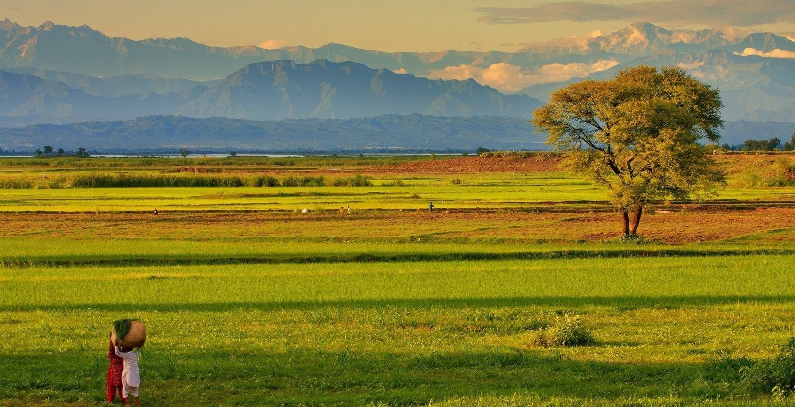
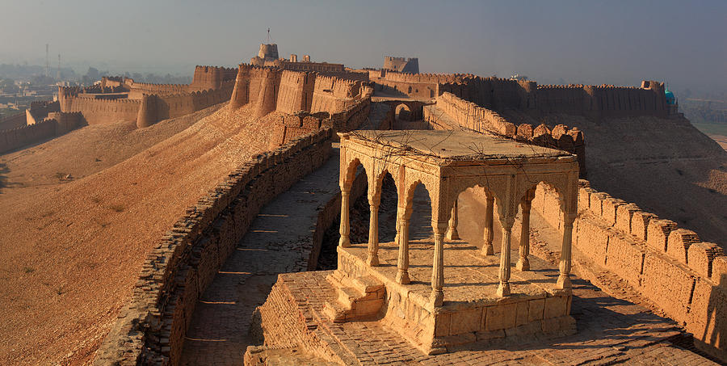
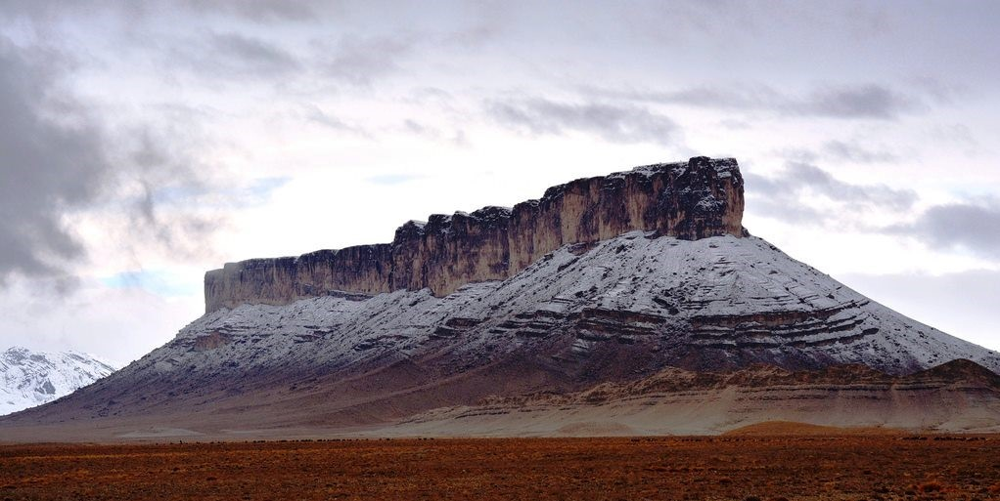
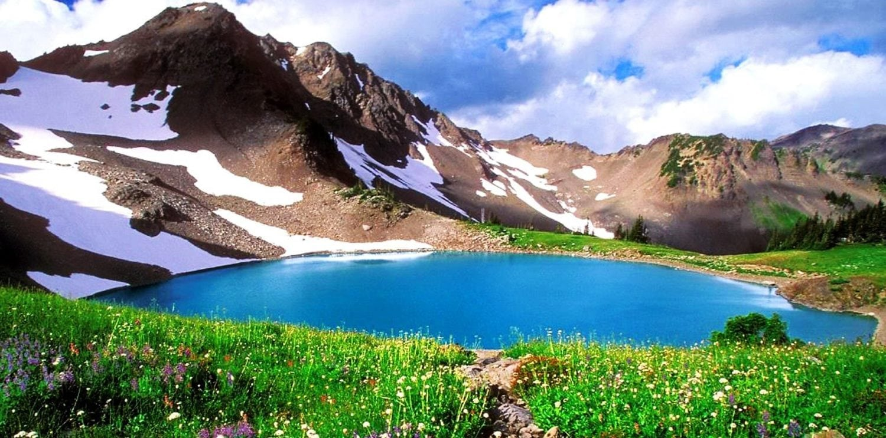

Provinces
Punjab
Punjab is Pakistan's most populous province, with an estimated population of 110,012,442 as of 2017. Punjab has been inhabited since ancient times. The Indus Valley Civilization, dating to 2600 BCE, was first discovered at Harappa. Punjab features heavily in the Hindu epic poem, the Mahabharata, and is home to Taxila, site of what is considered by many to be the oldest university in the world.
Sindh
Sindh is one of the four provinces of Pakistan. Located in the southeast of the country, it is the historical home of the Sindhi people. Sindh is the third largest province of Pakistan by area, and second largest province by population after Punjab.Sindh has Pakistan's second largest economy, while its provincial capital Karachi is Pakistan's largest city and financial hub, and hosts the headquarters of several multinational banks.
Balochistan
Balochistan is one of the four provinces of Pakistan. It is the largest province in terms of land area, forming the southwestern region of the country, but is the least populated. The main ethnic groups in the province are the Baloch people and the Pashtuns, who constitute 52% and 36% of the population respectively (according to the preliminary 2011 census).Balochistan is noted for its unique culture and extremely dry desert climate.
Khyber Pakhtunkhwa
Khyber Pakhtunkhwa formerly known as the North-West Frontier Province (NWFP), is one of the four administrative provinces of Pakistan, located in the northwestern region of the country along the International border with Afghanistan. Khyber Pakhtunkhwa is the third-largest province of Pakistan by the size of both population and economy, though it is geographically the smallest of four. It is home to 17.9% of Pakistan's total population.